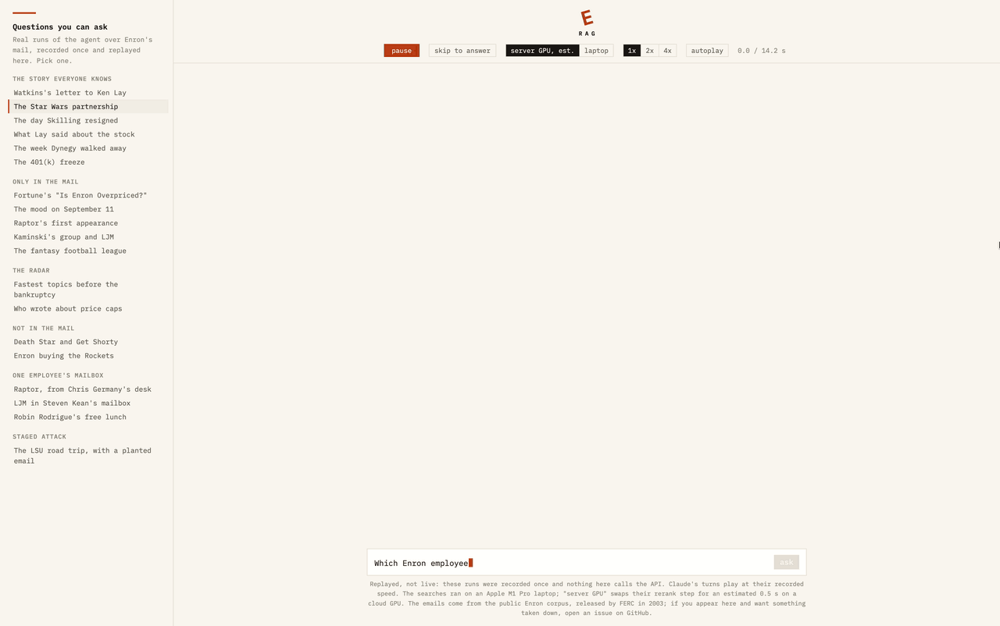
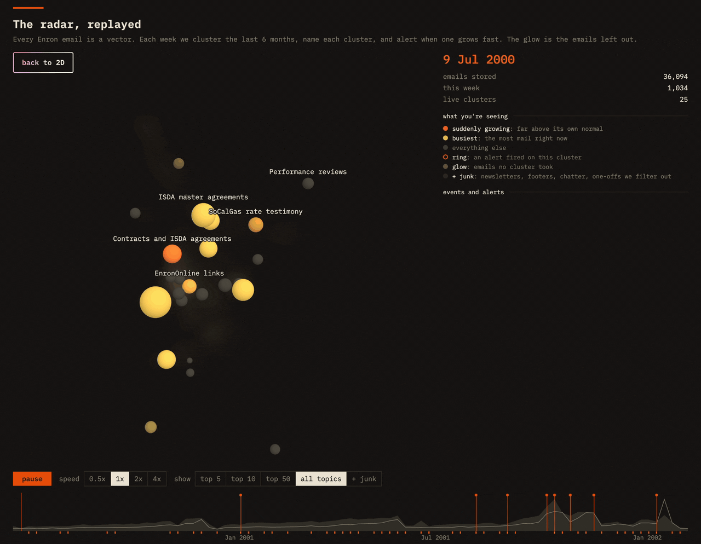

A RAG and a trend radar over the public Enron emails, in one Postgres database. Two recorded demos.

→ The radar, replayedTwenty months of Enron's mail as clusters growing week by week, stopping on the alerts that mattered.
The Enron emails, made public by FERC in 2003, in CMU's May 2015 release. The code on GitHub →